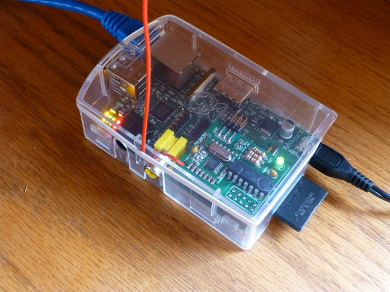

Will a Raspberry Pi with the non-SMD version of the RFM12Pi - i.e. the version with the DIL ATtiny84 in a socket; fit inside a standard Raspberry Pi enclosure ?
Are there any enclosures where this combination is known NOT to fit ?
Archived Forum |
|
Suitable case for Raspberry Pi & RFM12PiSubmitted by nothing clever on Fri, 10/05/2013 - 14:18Will a Raspberry Pi with the non-SMD version of the RFM12Pi - i.e. the version with the DIL ATtiny84 in a socket; fit inside a standard Raspberry Pi enclosure ? Are there any enclosures where this combination is known NOT to fit ?
» |
Re: Suitable case for Raspberry Pi & RFM12Pi
I have an RS Components case and it definitely won't fit in that with the ATiny in the socket. However I built my RFM12Pi with the ATiny soldered into the board and the ISP header mounted sideways, then it does fit - just!

Re: Suitable case for Raspberry Pi & RFM12Pi
I have ordered a standard pi case. But unfortunate RFM12 shield the Hight is too much to fit in the case and as usual with standard PI cases the SD card is outside.
I would be very much interested in a case for the PI, with the shield. Furthermore I am interested to cover my Antenna.
Anyone any sugestions/experiences?
Thank you very much AND: This Openenergymonitor community has done great work so far! Thank you very much.
Re: Suitable case for Raspberry Pi & RFM12Pi
Just have seen, that there is a brand new ready assembled RPi-emonbase RF shield. Here you can read:
"Lower profile to fit inside most Raspberry Pi enclosure"
But Antenna and a case covering also the SD card would be great.
Re: Suitable case for Raspberry Pi & RFM12Pi
I have found a taller box for the Raspberry Pi, designed to take the Pi-Face expansion board, so it's got more cut-outs than I'd need. It can be seen here ...http://cpc.farnell.com/camdenboss/cbrpf-blu/enclosure-high-impact-polystyrene/dp/SC12945?in_merch=New%20Products (Various colors).
Still looking for the ideal box, I am suprised no-one seems to do one.
Personally, I'd not want to enclose the antenna, I guess it all depends on how far the base is from the transmitters and how many walls it has to transmit thru etc.
I intend to install my emonTX in an ABS box this week. Will have to remove the jack sockets, and have chassis mount sockets instead, then fix to the wall near the consumer unit. I have replaced the antenna with a solid copper wire salvaged from some 2.5mm mains cable with a bead superglued to the top to help prevent poking my eye out ;-)
Mike
Re: Suitable case for Raspberry Pi & RFM12Pi
FWIW, I printed myself a Punnet case and it fits in. Pics on my profile. No need to say it is not IP68...
Re: Suitable case for Raspberry Pi & RFM12Pi
Yes, this is a known issue with the RFM12Pi V1. As Martin suggested fitting the ATtiny direct onto the board can help but this can be risky!
The new RFM12Pi V2 SMT should fit into most cases. Please post up your experiences, especially if you find a case it won't fit in!
http://shop.openenergymonitor.com/rfm12pi-v2-pre-assembled-raspberry-pi-expansion-board-433-mhz/
Re: Suitable case for Raspberry Pi & RFM12Pi
Hi,
Are there any known cases that would fit a raspberry pi (model B) in combination with RFM12PI V2 ?
kr
Jan.